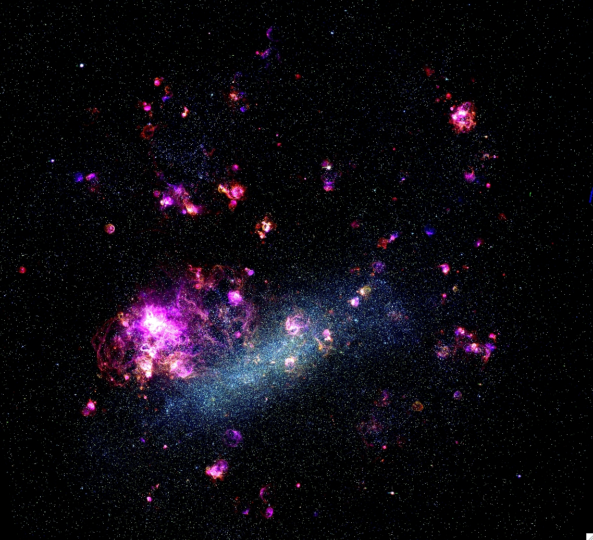

Via Láctea

Via Láctea é uma das bilhões de galáxias presentes no Universo. Trata-se da galáxia onde está localizado o Sistema Solar. É formada por matéria escura, gases, poeira e corpos celestes como estrelas, planetas, planetas anões, asteroides, meteoritos e outros. Nossa galáxia tem a forma de um espiral e é composta por três elementos principais: disco, bojo e halo. O disco é constituído por bilhões de estrelas, poeira e gases, sendo responsável por definir o formato de espiral. O bojo fica na região central, é circular e contém estrelas mais velhas, de cor avermelhada.
Andrômeda

Possui formato espiral e sua localização é de 2,54 milhões de anos-luz do Planeta Terra, sua posição é próxima da Constelação de Andrômeda. Segundos pesquisadores e cientistas, é tida como a mais próxima da Via Láctea. Andrômeda contém um núcleo duplo, evidenciado pelo Telescópio Espacial Hubble. Ainda se discute se o núcleo é realmente duplo, com a absorção violenta de uma galáxia menor por Andrômeda, ou se apenas foi aparentemente dividido em dois pela poeira interestelar.
Galáxia do Triângulo

Conhecida também como Messier 33, é uma galáxia em espiral que faz parte do Grupo Local, com diâmetro de 60 mil anos-luz, portanto menor do que a Via Láctea, mas a terceira maior da região. É formada por 40 milhões de estrelas, e estima-se que a sua massa seja de 50 bilhões M☉.
Nuvem de Magalhães
O seu diâmetro é vinte vezes menor do que o da Via Láctea e o seu número de estrelas dez vezes menor. Embora parte de sua morfologia seja irregular, a Grande Nuvem de Magalhães tem traços de uma estrutura espiralada. Ela contém moléculas orgânicas complexas, como metanol, éter dimetílico e metanoato de metila. Estas partículas de poeira podem ser também macromoléculas orgânicas. As Nuvens de Magalhães estão localizadas a 180.000 anos-luz de distância e estão entre as primeiras na lista das galáxias mais próximas da Via Láctea.
Viajando pela NOSSA galaxia
sim
não talvez